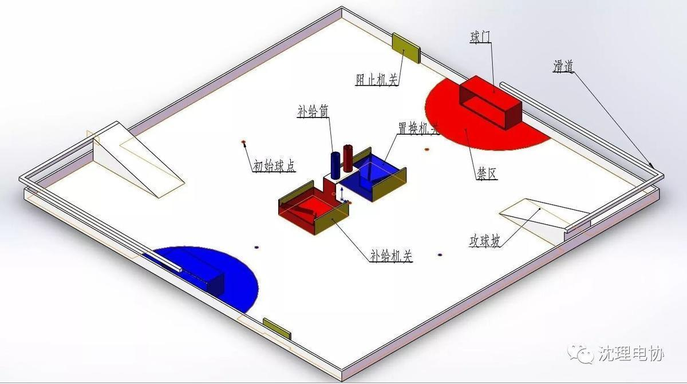
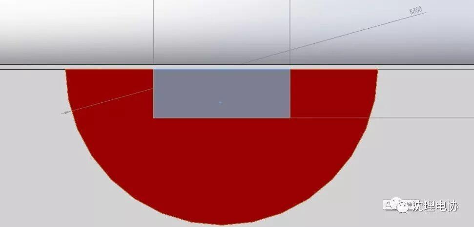
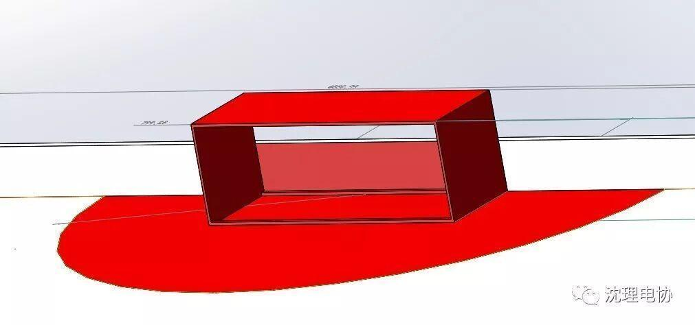
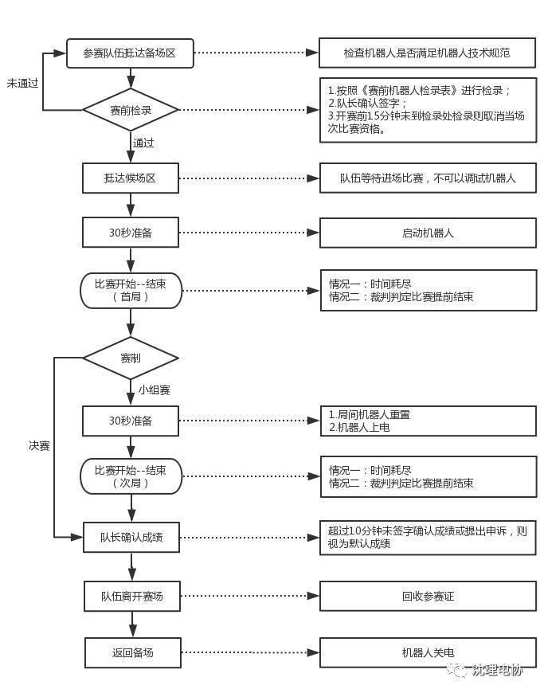
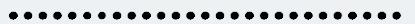
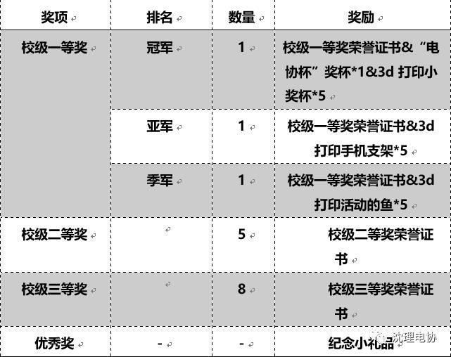
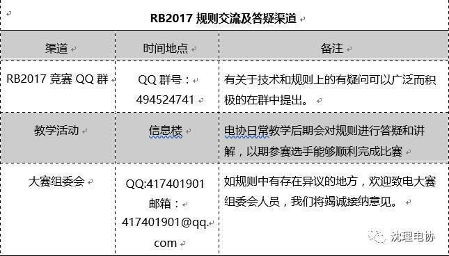

Robotball2017
寒风凛冽，大雪纷飞。电子技术与应用协会（以下简称电协）举办的“机器人足球大赛（Robotball2017）”即将在12月9日拉开帷幕。届时将有来自不同学院的65支参赛队伍同台竞技。
大家是否对此次比赛充满期待呢？
那么
下面就给大家简单介绍一下此次比赛。

场地概述
全场4800mm*4800mm

主要包括启动区（己方禁区）、进攻滑道、放球点、置换机关（大机关）、补给机关（小机关）。
球门
己方球门区为敌方进攻得分区，同时为己方机器人的出发区，包含禁区、球门两个赛场元素。

俯视图

立体图
图中半圆区域为“禁区”，其半径大小为：600mm
球门长、宽、高分别为 500mm*255mm*255mm
（更多场地信息详见《Robotball2017机器人大赛规则2.0》）
比赛相关
比赛制度
RB2017 的正式比赛分为小组赛和淘汰赛两部分。 小组赛中每场比赛会获得积分，而淘汰赛中则会对应地淘汰队伍。
单场比赛流程如下图所示： 
参赛人员规范
1.进入赛场区域的参赛队员称为场地队员，比赛过程中，每支队伍最多可以有 3 名场地队员。
2.场地队员中必须有且仅有 1 名操作手。
3.整个比赛过程中场地队员必须在赛场区域内，比赛开始后所有场地队员没有裁判的允许禁止离开参赛区域。
4.整个比赛过程中除场地队员外的参赛队员成为候场队员，候场队员可以在候场区观赛，比赛开始后候场队员禁止进入赛场区域。
赛前流程
参赛队员需要在比赛开始前到检录处检录，检录合格后需要佩戴参赛证进入候场区等待参加比赛。
检录规范：
1.每场比赛前必须至少提前 15 分钟到检录处检录
2.参赛机器人通过赛前检录后，如果出现故障后与 RB2017 组委会无关，比赛流程正常进行。
候场规范：
完成赛前检录后，参赛队伍可以凭参赛证进入候场区和上场比赛的候场队员一同观看比赛。
1.进入候场区的参赛队员没有裁判的允许禁止擅自离场。
2.进入候场区的参赛队员禁止调试参赛机器人
3.正确佩戴参赛证
赛中流程
每局比赛前的 30 秒准备时间阶段，双方参赛队员准备就绪后可向裁判举手示意，在 5 秒钟倒计时结束后比赛正式开始。若在 30 秒钟之内仅有两个以下的队伍准备就绪，比赛强制开始。
1.在 30 秒准备阶段机器人运动离开出发区。
2.未经过工作人员允许擅自调试机器人。
在裁判吹哨后比赛正式开始，同时计时开始，比赛期间任何参赛队员在没有裁判允许的情况下不得接触任何一方的参赛机器人。主裁判有权终止出现任何有悖公平竞技原则的比赛，并做出相应的处罚。
1.参赛队员未经裁判允许不得接触参赛机器人。
2.机器人不得对场地设施造成破坏。
3.如遇比赛过程中机器人失控，倾覆等无法操作的情况，可向裁判申请重启，裁判同意后脱鞋进场并将机器人放回出发区。
4.机器人不得通过任何方式取出任何球门中的球。
5.机器人不得恶意攻击对方机器人判定标准
①主动移动造成对方机器人位移超过 10cm 以上。
②主动移动造成对方机器人故障或损坏
③主动移动造成对方机器人卡死在某一区域。
6.机器人不得分裂为两个及以上机器人。
7.禁止一切恶意干扰破坏对方机器人或控制系统的一切有悖于公平竞争的行为。
赛后流程
1. 比赛结束后由裁判确认双方得分情况，包括进球得分，抢跑扣分，掉零件扣分，触发机关次
数，及其他比赛相关数据。
2.比赛结束后双方参赛队队长需要到比赛结果确认区确认比赛结果，并在比赛成绩单上签字确认。一旦签字确认比赛结果，裁判团有权不接受比赛结果申诉。 如果参赛队对比赛结果有异议需要在 10 分钟内向裁判团提出申诉，最后由裁判团决定当场比赛结果。
申诉
每支参赛队在小组赛和决赛共有 1 次申诉权利，如果申诉成功则保留此次申诉机会，否则之后不能再次进行申诉。申诉机会耗尽后，组委会不接受任何形式的申诉。受理申诉时，裁判长以及 RB2017 组委会拥有对仲裁结果的一切解释权。

奖项设置

本次大赛的最终解释权归大赛组委会所有

编辑| 刘聪